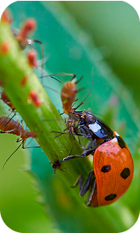
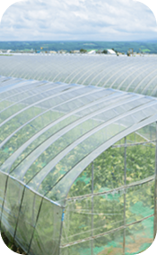
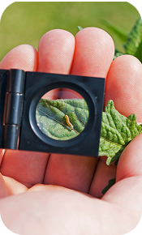
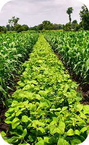

PROBLEMAS CAUSADOS NOS ECOSSISTEMAS PELO USO DE
AGROTÓXICOS
O QUE SÃO
AGROTÓXICOS?
Segundo o Ministério da Agricultura e Pecuária (MAPA), os agrotóxicos são produtos químicos, físicos ou biológicos utilizados para combater pragas e doenças. Também são conhecidos como defensivos agrícolas, agroquímicos ou pesticidas.


Risco à saúde humana.


Problemas ambientais.

Resíduos encontrados em alimentos.
POR QUE ELES SÃO
UM PROBLEMA?

Embora ótimo para controlar pragas e insetos, os agrotóxicos são um grande problema para nós, o planeta e todos os seus ecossistemas. Veja só:
PROBLEMAS CAUSADOS NO
ECOSSISTEMA
(Um conjunto formado por todos os seres vivos (plantas, animais, microrganismos) de uma região e os elementos não vivos (água, solo, ar, luz solar) com os quais eles interagem.)
IMPACTOS NA SAÚDE
HUMANA
A Organização Mundial da Saúde (OMS) registra pelo menos 20 mil mortos por ano devido ao consumo dos agrotóxicos. Segundo a OIT (Organização Internacional do Trabalho), 70 mil intoxicações agudas e crônicas que evoluem para óbito são causadas pelos agrotóxicos. Dependendo do produto utilizado, do tempo e da quantidade de produto consumido, a exposição aos agrotóxicos pode causar doenças. Toda a população está suscetível a exposições múltiplas aos agrotóxicos, por meio de alimentos e água contaminados.

PROBLEMAS NA
ÁGUA
O aumento intenso do uso dos agrotóxicos na agricultura tem poluído corpos hídricos brasileiros e traz graves consequências. Após diversas análises e estudos, foi registrada a presença de agrotóxicos em todas as amostras d’água, e a maioria apresenta concentração acima dos valores permitidos pelo Ministério da Saúde. Alguns desses agrotóxicos presentes nas amostras têm uso restrito em alguns países, pois afetam o meio ambiente e a saúde humana, causando mortes e intoxicações.

PROBLEMAS NO
SOLO
Como o solo é a região mais exposta aos agrotóxicos por conta da aplicação direta dos produtos nas plantas, com o tempo ele acaba se fragilizando e reduzindo sua fertilidade, diminuindo a sua biodiversidade e ocasionando acidez.

PROBLEMAS NO
AR
Um monitoramento científico mostra algo grave: resíduos de agrotóxicos são encontrados em chuvas, poeira doméstica, alimentos orgânicos e solos de propriedades que nem utilizam tal produto.

COMO PODEMOS
EVITAR
O USO DOS AGROTÓXICOS?
De acordo com a Organização das Nações Unidas para a Alimentação e a Agricultura (FAO), cerca de 40% da produção agrícola mundial é perdida anualmente devido a pragas. Diante disso, o uso dos agrotóxicos só vem aumentando, porém, com todos os problemas que eles causam, vêm sendo desenvolvidas técnicas para diminuir o seu uso, sendo elas:

BOA NUTRIÇÃO DAS PLANTAS

CONTROLE BIOLÓGICO

CULTIVO PROTEGIDO

MANEJO INTEGRADO DE PRAGAS (MIP)

ROTAÇÃO DE CULTURAS

USO CONSCIENTE DOS DEFENSIVOS
BENEFICIOS
FUTUROS!
Se controlarmos o uso do agrotóxico, teremos vários benefícios, tanto atualmente quanto futuramente. Melhoraremos a saúde humana, diminuindo mortes, doenças e intoxicações. Teremos água e ar com menos poluição. Meio ambiente e ecossistemas melhores com a prevenção da contaminação dos corpos hídricos e terras. Também proteção da fauna e flora locais. Juntos, poderemos ter um Brasil e um futuro melhor, não apenas para nós, mas para nossa futura geração!
JUNTOS FAZEMOS A